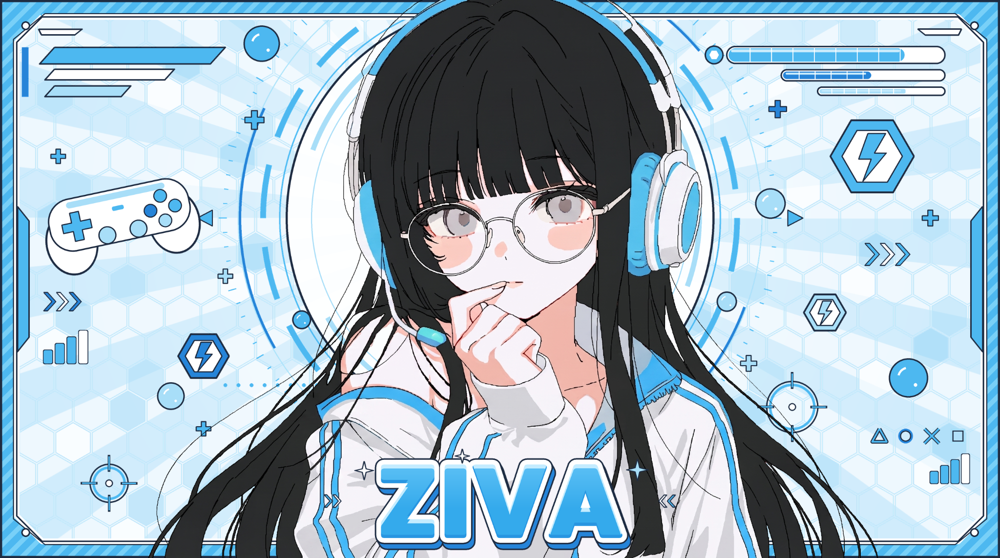

DATA INTIID: ZIVA-0430
- Nama
- Ziva Aleisha Kirana
- Umur
- 20 tahun
- Ulang tahun
- 30 April
- Jenis kelamin
- Cewek
- Tinggi badan
- 161 cm
- Berat badan
- 50–53 kg

Developer · Inovator · Rhythm Player
Membangun ide menjadi sistem yang berguna.
01 / IDENTITAS
Sosok di balik sistem.
“Aku bukan orang yang aktif di dunia media sosial karena media sosial bukan pekerjaanku. Fokus utamaku adalah membuat inovasi teknologi baru dan menciptakan kebutuhan teknologi berupa software.”
02 / KEMAMPUAN
Diukur dari fokus, logika, dan eksekusi.
DEV.SKILL / 01
SYS.LOGIC / 02
03 / DATA RHYTHM
@ZivaChan Indonesia
04 / KONEKSI
Hanya aktif di Discord saja. Untuk media sosial, itu adalah privasi saya dan lagipula saya jarang aktif karena lebih banyak mengerjakan proyek coding. Saya lebih dominan menggunakan Discord daripada Instagram, TikTok, Facebook, dan lainnya. Jadi, jangan tanyakan platform lain selain yang tertera di sini :)